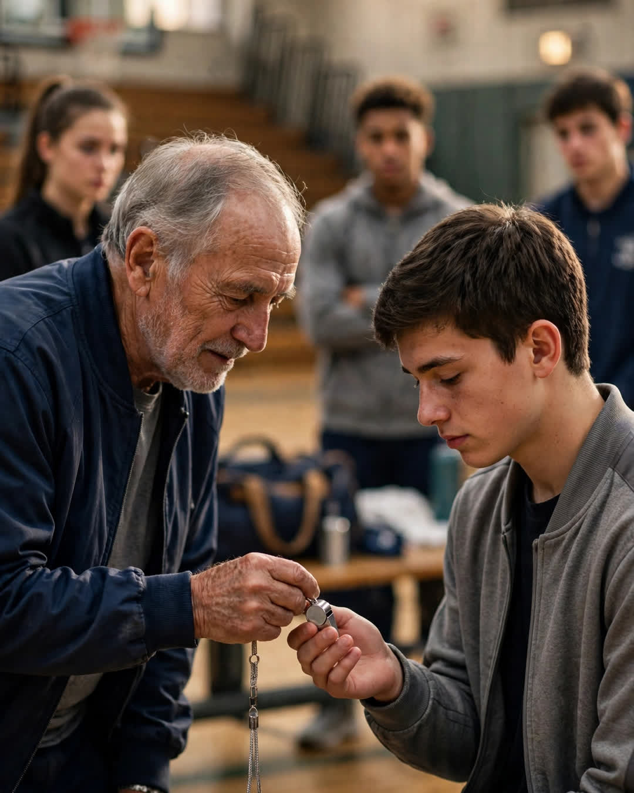

The Coach's Whistle
A Clipp Kaili original story

For four years I sat at the end of the bench, and at the last practice of my senior year, Coach Doyle gave me his whistle.
Not the star. Me.
Marcus, our point guard, had a scholarship, a highlight reel, and three colleges calling. I had a warm-up jacket that stayed clean, a stat line people were kind about, and four seasons of knowing every play we ran and almost never running one when it counted.
Don't misunderstand me. Coach played the boys who could win. That's the job. But he never once let me believe the bench was a verdict on my worth. I charted plays. I ran the scout team in practice until my lungs burned. When our freshman center wanted to quit in October, it was my job — Coach assigned it like it mattered, because it did — to talk him through the winter.
"You run the temperature of this team," he told me once, taping an ankle that would sit for thirty-two minutes that night. "Starters run the scoreboard. There's a difference, and the scoreboard leaves first."
Our season ended in the regional semifinal. Marcus cried in the locker room. So did I, in the shower where nobody had to be strong about it.
At the last practice — which was really just us shooting around in a quiet gym, nobody ready to leave the season behind — Coach blew that whistle one final time and called us in. He thanked the seniors. He thanked Marcus, and the room applauded like thunder.
Then he took the whistle from around his neck. The silver one. Twenty-six years of practices on that lanyard. Every player in that gym went still, because everyone assumed the same thing.
He walked past Marcus.
He stopped in front of me, and he pressed that whistle into my hand and closed my fingers around it himself, like I might drop the thing that mattered.
"You'll need this where you're going," he said.
"Coach," I said, "I'm not playing in college. You know that."
"I know exactly where you're going, son. You're going everywhere boys sit at the end of benches deciding what they're worth. You're going into classrooms and locker rooms and kitchen tables at midnight. You're the only one on this roster who learned how to lead without a spotlight, and that is the rarest thing I ever coached. Marcus will be fine with a ball. You needed the whistle."
He retired that spring. I went to a small college, studied education, and started coaching middle school ball in the town I grew up in — where I have a bench of my own now, and a boy at the end of it who charts plays and believes I've forgotten he's there.
I have not forgotten. I'm just waiting for the right practice.
The whistle hangs in my office on its original lanyard. It still works. I checked once, alone, and the sound filled the empty gym and raised the hair on my arms.
Some gifts say you were the best. This one said something harder and kinder: you were necessary. It just never happened to be your name they announced.
This story is a work of fiction, written to touch hearts and bring families closer.
← Back to all stories